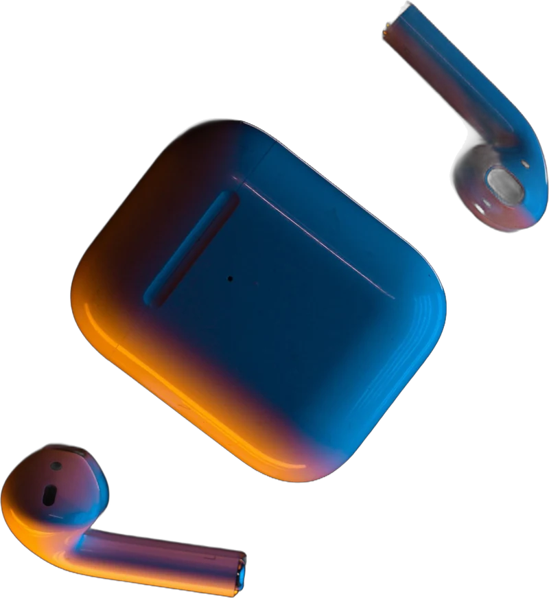

Nuevo · Aura One
Silencio que se siente.
Cancelación de ruido que se adapta a donde estés. Del colectivo a la oficina, solo queda tu música.

El mundo hace ruido. Aura lo apaga. Lo que queda es la canción, la voz de quien te llama y tu propia concentración.
Hecho para escuchar.
Y para olvidarte de que los tenés puestos.
01
Cancelación de ruido adaptativa
Ocho micrófonos escuchan el entorno y ajustan el silencio en tiempo real. El motor del colectivo desaparece; la alarma de tu celular, no.
02
Sonido espacial
Cada instrumento en su lugar. Las películas suenan alrededor tuyo y las llamadas, como si la otra persona estuviera al lado.
03
Modo ambiente
Tocá el auricular y escuchá lo que pasa afuera sin sacártelos. Ideal para pedir tu café o escuchar la parada.
04
Livianos todo el día
Casi no se sienten y el estuche los carga en el bolsillo. Pensados para jornadas largas, no para diez minutos.
Batería y carga
30 h
de música con el estuche de carga.
5 min
de carga rápida, 3 horas de escucha.
2
dispositivos conectados a la vez: celular y compu.
Elegí tu luz.
Atardecer
Tu música.
Nada más.
Reservá los tuyos y te avisamos apenas lleguen.
Reservar ahora